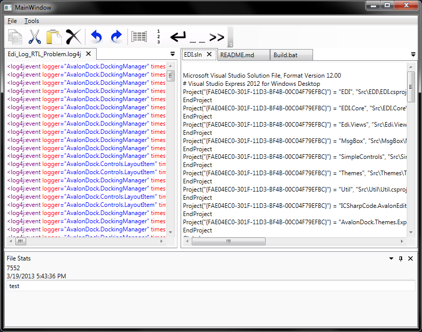
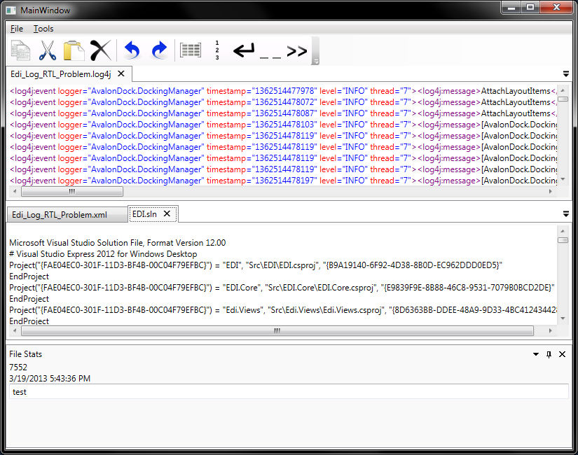
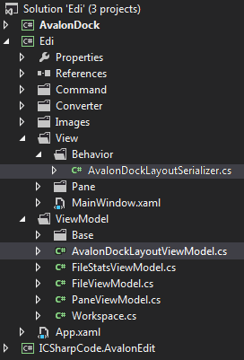
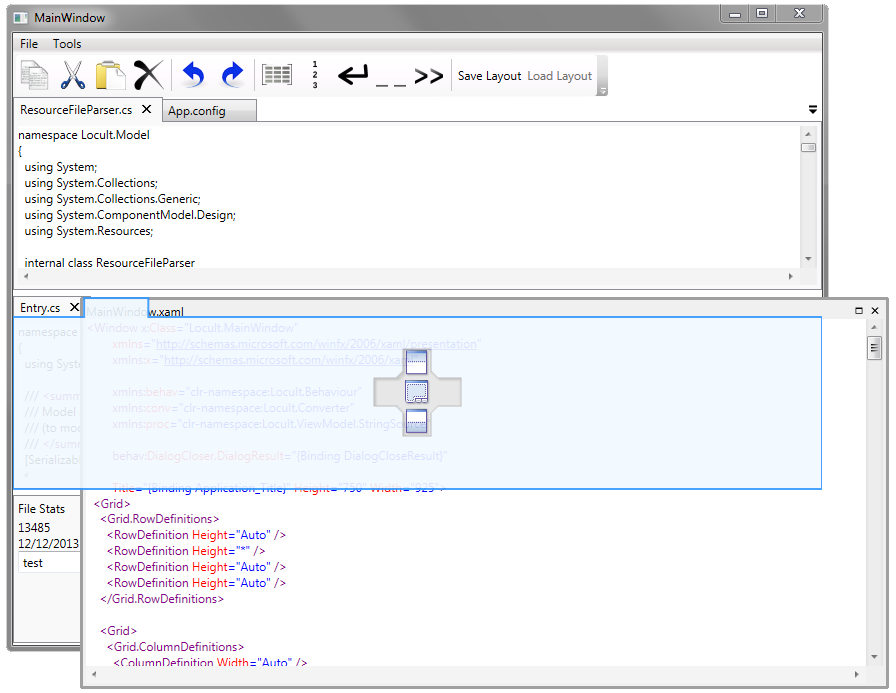
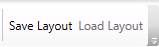
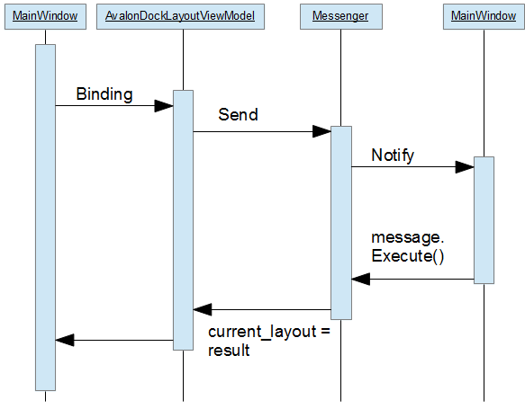

Introduction
This article is split 2 major sections. The first section shows you how to load/save AvalonDock layouts on application start-up and shut-down. The second section builds on the presented approach and implements two more commands to persist and re-load layouts during the run-time of the program. Each section has its own associated down.
Loading/Saving AvalonDock Layouts at Start-up/Shut-Down
Please download and inspect the code in the Version_05_Edi.zip file to follow the discussion presented in this section.


I recently helped a friend getting started with his AvalonDock developments and it occurred to me that many people have come to value the MVVM pattern, but not as many people actually know why it is important. That is, everyone seems to be aware of MVVM and how it de-couples layers but not many people seem to know why de-coupling is actually necessary in WPF.
We know about separation of concerns and that kind of architectural mumbo-jambo but what if I just do not care and use WPF as I used WinForms? Just store a reference in the viewmodel and call an appropriate method or set a property when the application logic sees fit:
public DockingManager ADManager{ get; set; }
public void UpdateLayout()
{
this.ADManager.UpdateLayout();
this.ADManager. ...
}
Mixing the WinForms style of programming with MVVM (as sketched above) is a no go. This style of programming can lead to an application that is unstable, not deterministic, and difficult to debug. This instability can typically occur since WPF applications implement more than 1 thread [2] and communicating between these threads can be a pain if you avoid using things like dependency properties, commanding via binding, (routed) events, routed commands, and all these other little things that set a WPF application apart from the rest of the computer science world.
This article shows how you can use AvalonDock without referencing the DockingManager instance in your viewmodel or anywhere below it. This is a valuable exercise, especially for beginners, since removing hard references to parts of the view within the viewmodel ensures that threading problems resulting in unstable applications, are a thing of the past.
The sample processing task used in this section of the article is to load and save the document layout at application start-up/shut-down. This valuable sample exercise is extended in the next major section futher below.
Preparation
This article is based on the solution of the last article that was published in step 4 of this tutorial [1]. You can either download the solution from the previous article and add each code piece as we step through the article or download the complete solution from this article to verify required code changes.
You should be aware of attached behaviours [3] to understand this article. Just look at the samples I've documented in the other article and come back when you get the hang of it. I am not going into the depth of attached behaviors here since I rather focus on its application with AvalonDock.
Using the Code
The heart of my solution is an attached behavior [3] on the DockingManager instance in the MainWindow.xaml code. This behavior reacts whenever the DockingManager instance fires the Load or Unload event.
So, we can add the attached behavior in its associated namespace and folder, say
Edi.View.Behavior (see sample code), call the new attached behavior class AvalonDockLayoutSerializer
and paste the code from the sample solution into the file.

Next we can adjust the MainWindow.xaml to make use of the new attached behavior class. Add a reference to the above namespace:
xmlns:AVBehav="clr-namespace:Edi.View.Behavior"
...and use that reference in the XAML code like so:
<avalonDock:DockingManager
AnchorablesSource="{Binding Tools}"
DocumentsSource="{Binding Files}"
ActiveContent="{Binding ActiveDocument, Mode=TwoWay, Converter={StaticResource ActiveDocumentConverter}}"
AVBehav:AvalonDockLayoutSerializer.LoadLayoutCommand="{Binding ADLayout.LoadLayoutCommand}"
AVBehav:AvalonDockLayoutSerializer.SaveLayoutCommand="{Binding ADLayout.SaveLayoutCommand}"
Grid.Row="2">
Note that we are no longer using the x:Name="dockManager" property in the above code. This code is used in virtually every AvalonDock (sample) code and it may lead to frustrating times if you are new to WPF So, removing this x:Name property may require you to remove corresponding code references to make this work.
How precisely does the above code work? The attached behavior in AvalonDockLayoutSerializer can bind and execute a command for loading and saving of layout files. The LoadLayoutCommand command is executed when the DockingManager fires the Load event. The Load event is a standard WPF event indicating the instantiation of a view. The Unload event is also a standard WPF event indicating that a view is about to be destroyed. This event results in executing the SaveLayoutCommand.
Both LoadLayoutCommand and SaveLayoutCommand are bound to a viewmodel property called ADLayout (of type AvalonDockLayoutViewModel) in the Workspace class. The AvalonDockLayoutViewModel class exposes the properties for the save/load layout commands.
So, to complete this solution, we need to add the code for the AvalonDockLayoutViewModel class in the Edi.ViewModel namespace. And add the property in the Workspace class:
private AvalonDockLayoutViewModel mAVLayout = null;
public AvalonDockLayoutViewModel ADLayout
{
get
{
if (this.mAVLayout == null)
this.mAVLayout = new AvalonDockLayoutViewModel();
return this.mAVLayout;
}
}
There are also some utility properties like Workspace.LayoutFileName, DirAppData, and Company but these are simple string properties that are only there to avoid hard coded and redundant string definitions. You can locate these properties if you browse through the sample solution.
I know I could use the blend interactivity dlls to replace the attached behavior in this article but I would like to make this exercise as simple and valuable as I can. So, research blend interactivity on your own if you think you know what this article is about.
You can also download my editor (https://edi.codeplex.com/) if you want to see the behavior working in a more complex scenario.
Load/Save Layouts via Commands

Summarizing the previous sections: We are using an attached behavior to listen to an event, convert it into a command, and execute it via command binding. These scenarios are simple to solve once the attached behavior pattern is well understood [3] and applied correctly.
- View.Event
- Attached Behavior
- Execute Command bound to viewmodel
- Execute corresponding viewmodel method
There are also use cases that require save and load of AvalonDock layouts during the life time of an application. These use cases may call for a more involved implementation where:
- The viewmodel initiates the function
- The view implements the corresponding processing and returns a result
- The viewmodel completes the processing (for example, by storing the result in a database).
I name the above scenario "round trip " because it involves the viewmodel starting some processing, requires the view to finish it, and the viewmodel to implement final steps of the processing. It is, therefore, more complex to implement this correctly. I did not have a good idea for a solution when I started to write this article but someone here at CodeProject (see forum below) came along and brought the Event Aggregator [4] pattern to my attention. And it turns out to be a good solution for exactly this type of problem as you can see in the Version_05_LoadSaveCommand.zip download.
This solution (see Version_05_LoadSaveCommand.zip) is based on MVVM Light and is a little bit more involved. You will see here that I dropped the AvalonDock and AvalonEdit projects and replaced them by a Nuget reference. There is also a Nuget references to MVVM Light since we use this framework to implement the Event Aggregator pattern.
The code is class-vise very similar to the initial implementation discussed in the first part of this article. But there are 2 new buttons in the user interface, which I will discuss next.

The Save Layout button is bound to the ADLayout.SaveWorkspaceLayoutToStringCommand property in the ApplicationViewModel class. The ADLayout.SaveWorkspaceLayoutToStringCommand property is implemented in the AvalonDockLayoutViewModel class same as in the previous solution. This command is bound to the SaveWorkspaceLayout_Executed() method with the following publisher code:
Messenger.Default.Send(new NotificationMessageAction<string>(
Notifications.GetWorkspaceLayout,
(result) =>
{
this.current_layout = result;
}));
This line creates a new NotificationMessageAction<string> object and sends it off to whoever subscripped to this type of message. The result of this message is a string, which is, when the result returns, set to the member string current_layout. But I am jumping ahead here. This does not make much sense until we have looked at the subscribers side of things - so lets look into MainWindow.xaml.cs to understand both sides of that story.
The constructor of the MainWindow class in MainWindow.xaml.cs has this line:
Messenger.Default.Register<NotificationMessageAction<string>>
(this, notication_message_action_recieved);
It is a subscription to notifications of the NotificationMessageAction<string> class and tells MVVM Light to execute the MainWindow.notication_message_action_recieved method whenever such a notification is send by a publisher. The method is then used to save the layout from the DockingManager and return it in the final execute statement as string parameter:
string xmlLayoutString = string.Empty;
using (StringWriter fs = new StringWriter())
{
XmlLayoutSerializer xmlLayout = new XmlLayoutSerializer(this.dockManager);
xmlLayout.Serialize(fs);
xmlLayoutString = fs.ToString();
}
message.Execute(xmlLayoutString);
...now we have seen both sides of the story and so we can understand why current_layout is set with the Xml layout string of the DockingManager class.
You may notice that we have the dockManager reference in MainWindow.xaml back in place (we removed it in the above approach). This is also OK for an MVVM compliant design since the field is private (via x:FieldModifier private) and it is never passed anywhere outside of the MainWindow class.
<avalonDock:DockingManager AnchorablesSource="{Binding Tools}"
x:Name="dockManager" x:FieldModifier="private"
DocumentsSource="{Binding Files}"
ActiveContent="{Binding ActiveDocument, Mode=TwoWay, Converter={StaticResource ActiveDocumentConverter}}"
IsEnabled="{Binding IsBusy, Converter={StaticResource BooleanNotConverter}, Mode=OneWay, UpdateSourceTrigger=PropertyChanged}"
AVBehav:AvalonDockLayoutSerializer.LoadLayoutCommand="{Binding ADLayout.LoadLayoutCommand}"
AVBehav:AvalonDockLayoutSerializer.SaveLayoutCommand="{Binding ADLayout.SaveLayoutCommand}"
Grid.Row="2">
The above reference is fine if it conforms to the requirements that it is private and is not passed to other classes outside of the view. But this is difficult and can be overseen (as I have done in an earlier version of the sample code). So, the best case MVVM implementation is still a view that does not need an x:Name property. But it is more then OK to have it carefully implemented when we have to face reality and such constrains limited time, effort, and so forth.
The sequence diagram below gives us a birds eye view and leads us to see the irony of that story. The irony is that a user starts a function in the MainWindow which sends itself a message to save the layout of the DockingManager that is contained in the MainWindow(!)

This particular case could of course be implemented easier. But imagine that the DockingManager may be contained in a UserControl that is either placed into the MainWindow or into a different window. Or think about placing the Save Layout button into a completely different part of the GUI - an extra dialog or a seperate window. The above solution would work for all these cases and more, which is important as you discover advanced WPF features.
The Load Layout button is enabled as soon as the current_layout string in the AvalonDockLayoutViewModel class is set to a value. You can change the arrangements of the displayed tool windows and click Load Layout to confirm that it really loads the previously saved layout. The function of that method is also implemented through the Event Aggregator discussed above. You should now be able to understand and verify its function. Just post a question if you still see open ends.
Conclusions
This article presents 3 solutions that should help you saving and loading the layout of the DockingManager class in your own application. The 2nd part, is based on MVVM Light, and would not be here unless someone here at CodeProject (see forum below) had contributed his idea. Thanks a lot for that.
Other frameworks, such as Caliburn.Micro or PRISM also support the Even Aggregation pattern. I developed the PRISM solution by re-engineering it from the MVVM Light solution. Feel free to send me your sample code if you feel like implementing an equivalent sample with Caliburn.Micro. Otherwise, I am off to the next step of the tutorial step and look forward to be in touch.
In any case, I am as always, looking forward to your feedback.
References